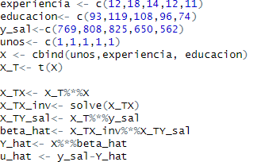
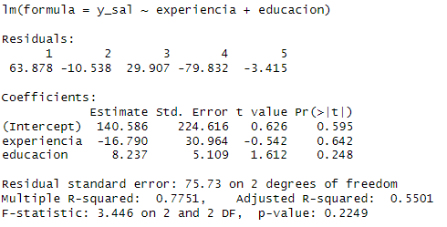

Clase 4 · Regresión lineal múltiple
Contenido oficial de la semana
Esta página reproduce íntegros y en orden los materiales de la semana 4 (sem4/).
Cátedra del viernes: Parte 1 (Clase5.tex, 25 láminas). Ayudantía/taller: Parte 2
(calculo_matrices.tex, ejercicio de la inversa de \(X^\top X\)). Los bloques Interactivo, los casos
y las preguntas de autoevaluación son material adicional para estudiar.
🎯 Objetivos de la sesión
Cátedra (viernes)
- Pasar del modelo simple al modelo de regresión lineal múltiple e interpretar cada \(\beta_j\) ceteris paribus.
- Plantear la estimación por MCO con \(k\) variables y escribir el modelo en notación matricial, \(y = X\beta + u\).
- Derivar \(\hat{\beta} = (X^\top X)^{-1} X^\top y\) y reconocer sus propiedades algebraicas.
- Distinguir entre \(R^2\) y \(R^2\) ajustado, y leer la salida de una regresión en R.
Ayudantía
- Calcular a mano \((X^\top X)^{-1}\) por cofactores y obtener \(\hat{\beta}\) con los datos del ejemplo.
🗓️ Agenda de la cátedra (viernes 18:40 – 21:25)
| Hora | Bloque | Láminas |
|---|---|---|
| 18:40 – 19:05 | Del modelo simple al múltiple: motivación e interpretación ceteris paribus | 1 – 3 |
| 19:05 – 19:25 | Estimación por MCO con \(k\) variables: residuos y condiciones de primer orden | 4 – 5 |
| 19:25 – 19:55 | Notación matricial: \(y = X\beta + u\) | 6 – 9 |
| 19:55 – 20:05 | Receso | |
| 20:05 – 20:35 | Derivación de \(\hat{\beta} = (X^\top X)^{-1}X^\top y\) y propiedades algebraicas | 10 – 12 |
| 20:35 – 20:55 | \(R^2\) y \(R^2\) ajustado | 13 – 14 |
| 20:55 – 21:20 | Ejemplo numérico paso a paso y salida en R | 15 – 25 |
| 21:20 – 21:25 | Autoevaluación y cierre |
La Parte 2 (ejercicio de cálculo matricial) se trabaja en la ayudantía/taller de la semana.
Regresión lineal múltiple: estimación
📄 Diapositivas: sem4/Clase5.tex · 25 láminas
Modelo de Regresión Múltiple: Introducción
-
En las clases anteriores, vimos el modelo de regresión lineal simple:
\[ y = \beta_0 + \beta_1x + u \] -
Sin embargo, el supuesto de que \(E[u|x] = 0\) en dicho modelo es muy fuerte, ya que todas las variables no incluidas van al error.
-
Además, si nos interesa la predicción, es muy difícil predecir la variable \(y\) en base a una sola variable.
-
El modelo de regresión lineal múltiple (RLM) permite esto.
Modelo de Regresión Lineal Múltiple
-
A nivel poblacional, el modelo RLM se define como:
\[ y = \beta_0 + \beta_1x_1 + \beta_2x_2 + \ldots + \beta_kx_k + u \] -
Asumamos que \(E[u|x_1, x_2, \ldots, x_k] = 0\).
-
Interpretación de los parámetros \(\beta\):
-
Por ejemplo, si todas las variables excepto \(x_1\) permanecen constantes:
\[ \Delta E[y|x_1, x_2, \ldots, x_k] = \beta_1 \Delta x_1 \]\(\Rightarrow\) \(\beta_1 = \frac{\Delta E[y|x_1, x_2, \ldots, x_k]}{\Delta x_1}\)
-
Interpretación: Cuando \(x_1\) cambia en una unidad, el valor esperado de \(y\) cambia en \(\beta_1\) unidades, manteniendo todas las demás variables incluidas constantes.
Es como una derivada parcial!
Modelo de Regresión Múltiple: Estimación MCO
-
Al agregar más variables al modelo para poder estudiar el efecto de \(x\), ceteris paribus estas otras variables.
-
Por ejemplo, al estudiar el efecto de educación en salario, queremos dejar la inteligencia constante (IQ).
-
Al incluir esta variable en la regresión, podemos ver cuánto afecta un año más de educación en salario, dejando constante IQ.
-
De hecho, si agregamos la variable IQ, el coeficiente de educación que obtenemos se hace más pequeño.
MCO Simple: \(\hat{salario} = 0.09 + 0.54 \cdot educacion\)
MCO Múltiple: \(\hat{salario} = 0.065 + 0.37 \cdot educacion + 0.20 \cdot IQ\)
- Ahora vamos a ver cómo estimar los \(\hat{\beta}\) del modelo de regresión múltiple.
Modelo de Regresión Lineal Múltiple: Estimación
Dada una muestra de \(n\) individuos, tenemos la siguiente ecuación:
Igual que en el modelo RLS, los residuos vienen dados por:
MCO para el Modelo Lineal Múltiple
Es decir,
CPO:
...
Existen \(k + 1\) condiciones de primer orden para \(k + 1\) incógnitas.
Notación matricial modelo poblacional
-
El modelo de regresión lineal múltiple cada individuo \(i\) es:
\[ y_i = \beta_0 + \beta_1 x_{i1} + \beta_2 x_{i2} + \dots + \beta_k x_{ik} + u_i \quad \forall i = 1, \dots, n \] -
Matricialmente, lo podemos expresar:
\[ y_i = \mathbf{x}_i^\top \mathbf{\beta} + u_i \quad \forall i = 1, \dots, n \]con
\[ \mathbf{x}_i = \begin{pmatrix} 1 \\ x_{i1} \\ \vdots \\ x_{ik} \end{pmatrix}, \quad \mathbf{\beta} = \begin{pmatrix} \beta_0 \\ \beta_1 \\ \vdots \\ \beta_k \end{pmatrix} \] -
Noten que son \(n\) ecuaciones (una para cada individuo).
Notación
-
\[ y = X\beta + u \]
con
\[ y = \begin{pmatrix} y_1 \\ \vdots \\ y_n \end{pmatrix}, \quad X = \begin{pmatrix} \mathbf{x}_1^\top \\ \vdots \\ \mathbf{x}_n^\top \end{pmatrix} = \begin{pmatrix} 1 & x_{11} & \dots & x_{1k} \\ \vdots & \vdots & \ddots & \vdots \\ 1 & x_{n1} & \dots & x_{nk} \end{pmatrix}, \quad u = \begin{pmatrix} u_1 \\ \vdots \\ u_n \end{pmatrix} \]donde \(u\) y \(y\) son vectores de \(n \times 1\) y \(X\) es una matriz de \(n \times (k + 1)\).
Ejemplo: \(n=5\), dos variables: \(x_1\), \(x_2\)
Re-escribiendo:
Mínimos Cuadrados Ordinarios (MRL Múltiple)
-
Como antes, podemos definir:
-
\(\hat{\beta}\): estimadores de los \(\beta\) dimensión, \((k+1) \times 1\)
-
\(\hat{y} = X \hat{\beta}\): Valores predichos de \(y\), dimensión \(n \times 1\)
-
Por lo tanto, los residuos en forma matricial:
\[ \hat{u} = y - \hat{y} = y - X \hat{\beta} \]
-
Recordar
-
Derivadas
Si \(a\) y \(\beta\) son vectores y \(A\) una matriz simétrica, entonces:
-
\(\frac{da^\top \beta}{d\beta} = a\)
-
\(\frac{d\beta^\top A\beta}{d\beta} = 2A\beta\)
-
-
Propiedades de la traspuesta
Sean \(D\) y \(E\) matrices: \((DE)^\top = E^\top D^\top\)
-
Potencias
\(\sum_{i} (s_i)^2 = s^\top s\)
Mínimos Cuadrados Ordinarios (MRL Múltiple)
-
La suma de los residuos al cuadrado es:
\[ \hat{u}^\top \hat{u} = (y - X \hat{\beta})^\top (y - X \hat{\beta}) \]\[ = y^\top y - \hat{\beta}^\top X^\top y - y^\top X \hat{\beta} + \hat{\beta}^\top X^\top X \hat{\beta} \]\[ = y^\top y - 2 y^\top X \hat{\beta} + \hat{\beta}^\top X^\top X \hat{\beta} \] -
Entonces, condiciones de primer orden:
\[ \frac{\partial \hat{u}^\top \hat{u}}{\partial \hat{\beta}} = 0 \quad \Rightarrow \quad -2X^\top y + 2X^\top X \hat{\beta} = 0 \quad \Rightarrow \quad \hat{\beta} = (X^\top X)^{-1} X^\top y \] -
Note que precisamos suponer que \(X\) tiene rango \((k+1)\) completo \(\Rightarrow X^\top X\) es invertible.
-
Las \(k + 1\) ecuaciones \(X^\top y = X^\top X \hat{\beta}\) son llamadas ecuaciones normales para MCO.
-
Condición de segundo grado: \(\frac{d^2 \hat{u}^\top \hat{u}}{d \hat{\beta} d \hat{\beta}} = 2X^\top X\) positiva definida.
Propiedades algebraicas
-
Al igual que el caso de regresión simple, las propiedades algebraicas se derivan de las CPO.
-
Propiedades 1 y 2: \(X^\top \hat{u} = 0\):
\[ \sum_{i} \hat{u}_i = 0 \quad (\text{propiedad 1}) \]\[ \sum_{i} x_{i1} \hat{u}_i = 0 \quad (\text{propiedad 2}) \]\[ \sum_{i} x_{i2} \hat{u}_i = 0 \quad (\text{propiedad 2}) \]\[ \dots \]\[ \sum_{i} x_{ik} \hat{u}_i = 0 \quad (\text{propiedad 2}) \] -
Propiedad 3: La media de la variable observada \(y\) es igual a la media de la variable predicha \(\hat{y}\):
\[ \bar{y} = \bar{\hat{y}} \] -
Propiedad 4: El punto \((\bar{x}_1, \bar{x}_2, \dots, \bar{x}_k, \bar{y})\) pasa por la curva de regresión.
Bondad de Ajuste: \(R^2\)
El \(R^2\) nos dice que la proporción de la varianza muestral de \(y\) es explicada por nuestra regresión MCO. Recordando las definiciones:
-
Suma de cuadrados explicada: \(SSE = \sum_{i=1}^{n} (\hat{y}_i - \bar{y})^2\)
-
Suma de cuadrados residual: \(SSR = \sum_{i=1}^{n} \hat{u}_i^2\)
-
Suma de cuadrados total: \(SST = \sum_{i=1}^{n} (y_i - \bar{y})^2\)
La fórmula para el \(R^2\) es igual que en el caso de la regresión simple:
Bondad de Ajuste: \(R^2\) ajustado
-
\(R^2\) crece (o queda igual) a medida que se agregan más variables al modelo. Esto ocurre incluso si la variable agregada no es relevante en el modelo poblacional.
-
Necesitamos una medida que penalice agregar variables irrelevantes.
-
Se define el \(R^2\) ajustado como:
\[ \overline{R^2} = 1 - \frac{n - 1}{n - k - 1} \frac{SSR}{SST} \]
Ejemplo: obtener \(\hat{\beta} = (X^\top X)^{-1}X^\top y\)
Lámina progresiva · recórrela paso a paso, como en la presentación
Modelo: \(y_i = \beta_0 + \beta_1 x_{i1} + \beta_2 x_{i2} + u_i\), \(n=5\).
Base de datos:
| Individuos | unos | \(x_1\) (experiencia) | \(x_2\) (educación) | \(y\) (salario) |
|---|---|---|---|---|
| Juan | 1 | 12 | 93 | 769 |
| Pedro | 1 | 18 | 119 | 808 |
| Sofia | 1 | 14 | 108 | 825 |
| Caro | 1 | 12 | 96 | 650 |
| Alex | 1 | 11 | 74 | 562 |
Modelo: \(y_i = \beta_0 + \beta_1 x_{i1} + \beta_2 x_{i2} + u_i\), \(n=5\).
Base de datos:
| Individuos | unos | \(x_1\) (experiencia) | \(x_2\) (educación) | \(y\) (salario) |
|---|---|---|---|---|
| Juan | 1 | 12 | 93 | 769 |
| Pedro | 1 | 18 | 119 | 808 |
| Sofia | 1 | 14 | 108 | 825 |
| Caro | 1 | 12 | 96 | 650 |
| Alex | 1 | 11 | 74 | 562 |
Modelo: \(y_i = \beta_0 + \beta_1 x_{i1} + \beta_2 x_{i2} + u_i\), \(n=5\).
Base de datos:
| Individuos | unos | \(x_1\) (experiencia) | \(x_2\) (educación) | \(y\) (salario) |
|---|---|---|---|---|
| Juan | 1 | 12 | 93 | 769 |
| Pedro | 1 | 18 | 119 | 808 |
| Sofia | 1 | 14 | 108 | 825 |
| Caro | 1 | 12 | 96 | 650 |
| Alex | 1 | 11 | 74 | 562 |
Entonces tenemos: \((X^{\top}X)^{-1} = \begin{bmatrix} 8.80 & 0.19 & -0.11 \\ 0.19 & 0.17 & -0.02 \\ -0.11 & -0.02 & 0.00 \\ \end{bmatrix}\)
\(X^{\top}y = \begin{bmatrix} 3614 \\ 49304 \\ 360757 \\ \end{bmatrix}\)
Entonces tenemos: \((X^{\top}X)^{-1} = \begin{bmatrix} 8.80 & 0.19 & -0.11 \\ 0.19 & 0.17 & -0.02 \\ -0.11 & -0.02 & 0.00 \\ \end{bmatrix}\)
\(X^{\top}y = \begin{bmatrix} 3614 \\ 49304 \\ 360757 \\ \end{bmatrix}\)
Multiplicando obtenemos los estimadores: \(\hat{\beta} = (X^{\top}X)^{-1}X^{\top}y=
\begin{bmatrix}
\hat{\beta}_0 \\
\hat{\beta}_1 \\
\hat{\beta}_2 \\
\end{bmatrix}=
\begin{bmatrix}
140.59 \\
-16.79 \\
8.24 \\
\end{bmatrix}\)
Entonces tenemos: \((X^{\top}X)^{-1} = \begin{bmatrix} 8.80 & 0.19 & -0.11 \\ 0.19 & 0.17 & -0.02 \\ -0.11 & -0.02 & 0.00 \\ \end{bmatrix}\)
\(X^{\top}y = \begin{bmatrix} 3614 \\ 49304 \\ 360757 \\ \end{bmatrix}\)
Multiplicando obtenemos los estimadores: \(\hat{\beta} = (X^{\top}X)^{-1}X^{\top}y=
\begin{bmatrix}
\hat{\beta}_0 \\
\hat{\beta}_1 \\
\hat{\beta}_2 \\
\end{bmatrix}=
\begin{bmatrix}
140.59 \\
-16.79 \\
8.24 \\
\end{bmatrix}\)
Si quisieramos la matrix de prediccion de y, simplemente calculamos:
En general
En R

Regresión

Ejercicio: la inversa de XᵀX por cofactores
📄 Documento: sem4/calculo_matrices.tex · 7 secciones
Material de ayudantía/taller
Este ejercicio no se ve en la cátedra del viernes: se trabaja en la ayudantía/taller de la semana. Mantiene el formato numérico del documento original (punto para los miles, coma decimal).
Modelo y datos
Modelo de regresión lineal múltiple con \(n=5\) individuos:
donde \(x_{1}=\) experiencia (años) y \(x_{2}=\) educación (años).
| Individuo | unos | \(x_1\) (experiencia) | \(x_2\) (educación) | \(y\) (salario) |
|---|---|---|---|---|
| Juan | 1 | 12 | 93 | 769 |
| Pedro | 1 | 18 | 119 | 808 |
| Sofía | 1 | 14 | 108 | 825 |
| Caro | 1 | 12 | 96 | 650 |
| Alex | 1 | 11 | 74 | 562 |
Matrices del modelo:
Multiplicando \(X^\top X\) (cada entrada es la suma de productos correspondiente: \(n\), \(\sum x_1\), \(\sum x_2\), \(\sum x_1^2\), \(\sum x_1 x_2\), \(\sum x_2^2\)):
El objetivo de este documento es obtener \(A^{-1}=(X^\top X)^{-1}\) paso a paso, usando el método de cofactores:
donde \(C\) es la matriz de cofactores de \(A\).
Paso 1: Matriz de menores
El menor \(M_{ij}\) es el determinante de la submatriz \(2\times 2\) que resulta de eliminar la fila \(i\) y la columna \(j\) de \(A\).
Por lo tanto, la matriz de menores es:
(Nota: como \(A=X^\top X\) es simétrica, se cumple \(M_{12}=M_{21}\) y \(M_{13}=M_{31}\), \(M_{23}=M_{32}\), lo cual sirve como chequeo intermedio.)
Paso 2: Matriz de cofactores
Cada cofactor se obtiene aplicando el patrón de signos (tablero de ajedrez) a los menores:
Paso 3: Matriz adjunta (adjunta = transpuesta de cofactores)
Como \(A\) es simétrica, \(C\) también resulta simétrica, así que \(\operatorname{adj}(A)=C\) en este caso particular (esto no ocurre en general; solo porque \(A=X^\top X\) es simétrica).
Paso 4: Determinante de \(A\)
El determinante se calcula expandiendo por cofactores a lo largo de la primera fila:
Paso 5: Matriz inversa
Dividiendo cada entrada por \(34.276\) se obtiene, en decimales:
Cálculo de \(\hat\beta=(X^\top X)^{-1}X^\top y\)
Como la base de datos ya incluye la variable \(y\) (salario), es posible completar el ejercicio calculando el vector \(X^\top y\) y luego el estimador OLS. Con \(y=(769,\,808,\,825,\,650,\,562)^\top\):
Luego:
Es decir, \(\hat\beta_0\approx 140,586\), \(\hat\beta_1\approx -16,790\) y \(\hat\beta_2\approx 8,237\).
🧠 Ideas clave
- En la regresión múltiple cada \(\beta_j\) es un efecto ceteris paribus: la pendiente del plano en la dirección de \(x_j\).
- Controlar por una variable cambia el coeficiente de interés (0.54 → 0.37 al agregar IQ), como predice la fórmula de variable omitida.
- En notación matricial \(y = X\beta + u\), con \(X\) de dimensión \(n \times (k+1)\), y \(\hat{\beta} = (X^\top X)^{-1} X^\top y\) exige rango completo.
- El \(R^2\) nunca baja al agregar variables; el \(R^2\) ajustado penaliza cada variable adicional.
✅ Autoevaluación
En salario = 0.065 + 0.37·educación + 0.20·IQ, ¿qué significa 0.37?
✅ En la regresión múltiple cada coeficiente es un efecto ceteris paribus: la pendiente del plano en la dirección de esa variable, con las demás incluidas fijas.
Con n = 100 observaciones y k = 4 variables explicativas, ¿qué dimensión tiene la matriz X?
✅ X tiene una fila por observación y una columna por parámetro: la columna de unos más las 4 variables, es decir n × (k + 1) = 100 × 5.
¿Por qué se exige que X tenga rango completo (k + 1)?
✅ Si una columna es combinación lineal de otras (por ejemplo, dos variables idénticas), XᵀX no se puede invertir y MCO no tiene solución única. Pruébalo en la calculadora.
Agregas al modelo una variable que no tiene ninguna relación con y. ¿Qué pasa?
✅ El R² nunca baja al agregar variables; el R² ajustado penaliza con (n − 1)/(n − k − 1). Es la trampa del R² que viste en el juego.
📚 Para la próxima clase
- Wooldridge, capítulo 3, secciones 3.1–3.2 (Análisis de regresión múltiple: estimación).
- 🛠️ Esta semana es el Taller 1: repasa el ejercicio de la Parte 2 y verifica tus cálculos con la calculadora matricial.
- Próxima clase: Interpretación de la regresión múltiple.